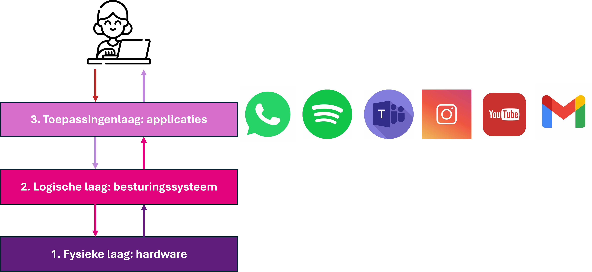
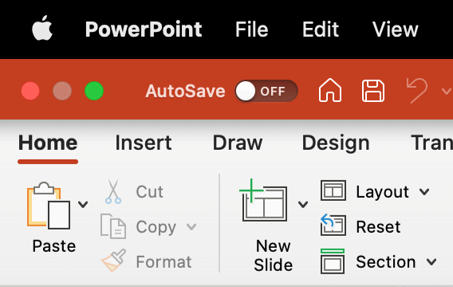
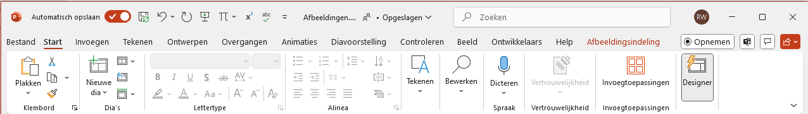
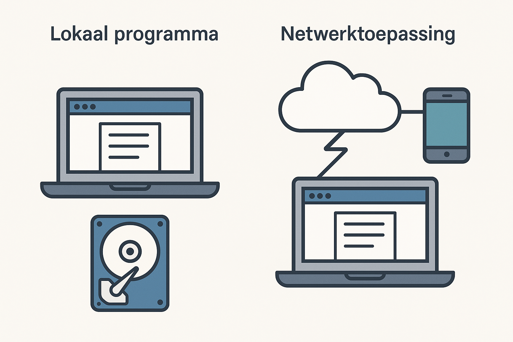

Drielagenmodel met interfaces.
Zonder apps kun je niet veel met een digitaal apparaat. Of je nu een spel speelt, een verslag schrijft of een foto deelt via WhatsApp — je gebruikt toepassingen: programma’s die draaien op je apparaat.
In de vorige hoofdstukken heb je geleerd hoe een digitaal apparaat is opgebouwd uit drie lagen: de fysieke laag (hardware), de logische laag (zoals het besturingssysteem) en de toepassingenlaag. In dit hoofdstuk zoom je in op die bovenste laag van het drielagenmodel: de toepassingenlaag. Alles wat je direct gebruikt of ziet, zoals apps en websites, behoort tot de toepassingenlaag. De toepassingenlaag levert de diensten die direct bruikbaar zijn voor de eindgebruiker. Het is de laag waarin programma’s draaien waarmee gebruikers interactie hebben met het computersysteem. Net als de andere lagen, maakt deze laag gebruik van de onderliggend laag, de logische laag (zoals het besturingssysteem), die op zijn beurt de hardware aanstuurt.

De toepassingenlaag in het drielagenmodel.
Een toepassing is software die je als gebruiker rechtstreeks gebruikt: een tekst typen, muziek luisteren, een video kijken of chatten. Dat kan een programma zijn op je computer, of een app (kort voor applicatie) op je smartphone of tablet.
Hieronder zie je een aantal bekende voorbeelden van toepassingen:
Let op: niet alles wat je op je scherm ziet is een toepassing. De grafische gebruikersomgeving (GUI) – zoals het bureaublad, de taakbalk of het startmenu – hoort bij het besturingssysteem. Het is geen toepassing, maar een hulpmiddel van de logische laag om toepassingen te kunnen starten of beheren.
Ook andere onderdelen van het besturingssysteem, zoals de printerinstellingen, taakbeheer of bestandstoegang, horen niet bij de toepassingenlaag.
Welke van de volgende voorbeelden is géén toepassing?
Antwoord Opdracht 1: B – Het startmenu is onderdeel van de grafische gebruikersomgeving van het besturingssysteem (logische laag), geen toepassing.
Wat is de belangrijkste functie van de toepassingenlaag?
Antwoord Opdracht 2: C – Laat de gebruiker werken met apps en programma’s
Koppel elk van de onderstaande onderdelen aan de juiste laag van het drielagenmodel. Kies uit:
Antwoord Opdracht 3:
Net als de fysieke en logische lagen, werkt de toepassingenlaag nooit alleen. Een toepassing maakt gebruik van allerlei functies van het besturingssysteem, zoals het opslaan van bestanden, afspelen van geluid of toegang tot het netwerk. Die functies zitten in de logische laag, die op haar beurt de hardware aanstuurt, in de fysieke laag.
Als jij bijvoorbeeld op ‘Opslaan’ klikt in Word, dan:
De gebruiker merkt meestal niets van de samenwerking tussen deze lagen – die verloopt automatisch ‘achter de schermen’.
Drielagenmodel met interfaces.
Vaak maakt een toepassing gebruik van een API (Application Programming Interface). In hoofdstuk 1 heb je geleerd dat dit een soort ‘afsprakenlijst’ is waarmee een toepassing met het besturingssysteem kan communiceren. Zo hoeft een app niet te weten hoe het besturingssysteem precies werkt, maar alleen hoe het functies kan aanroepen, zoals opslaan of de camera gebruiken. Daarom ziet een app er op verschillende Android-toestellen ongeveer hetzelfde uit: hij gebruikt steeds dezelfde afspraken.
Toepassingen gebruiken vaak onderdelen van de grafische gebruikersomgeving van het besturingssysteem, zoals vensters, knoppen en menu’s. Deze onderdelen worden geleverd door de logische laag. Daarom zien toepassingen er vaak ‘typisch Windows’ of ‘typisch macOS’ uit. Dat noemen we de look-and-feel van een besturingssysteem.
Bijvoorbeeld: bij een Mac staat de sluitknop van een venster linksboven, en bij Windows rechtsboven. De toepassing bepaalt wat er in het venster gebeurt, maar het uiterlijk van het venster komt uit de logische laag.
|  |  |
| Vensters op macOS en Windows zien er anders uit, doordat de toepassingenlaag gebruikmaakt van de GUI van het besturingssysteem. | |
Leg uit waarom een programma als Outlook tot de toepassingenlaag behoort, en niet tot de logische of fysieke laag.
Antwoord Opdracht 4:
Outlook behoort tot de toepassingenlaag omdat het een programma is dat de gebruiker direct gebruikt om e-mails te lezen en versturen. Het draait bovenop het besturingssysteem en maakt gebruik van functies uit de logische laag, zoals netwerkverbinding, bestandsbeheer en meldingen. Outlook hoort niet bij de logische laag, omdat het geen systeemfuncties regelt zoals geheugenbeheer of het aansturen van apparaten. Het hoort ook niet bij de fysieke laag, want het stuurt geen hardware direct aan.
Waarom merkt een gebruiker meestal niets van de logische en fysieke laag bij het opslaan van een document in Word?
Antwoord: B – Omdat het opslaan gebeurt via het besturingssysteem, zonder dat de gebruiker dat hoeft te zien
Lees deze situatie:
Je maakt een screenshot in een app en kiest 'delen via WhatsApp'.
Beschrijf bij elke laag wat er op dat moment gebeurt.
Antwoord Opdracht 6:
Als je een verslag typt in Word of een presentatie maakt in Google Slides, gebruik je toepassingen. Maar er is een belangrijk verschil: sommige toepassingen draaien lokaal op je eigen apparaat, terwijl andere via het netwerk werken, meestal via een browser. Je hebt dus soms internet nodig, en soms niet.
Misschien herken je dit verschil zelf ook al:
Toch doen deze programma’s soms precies hetzelfde. Wat is dan eigenlijk het verschil tussen een lokaal programma en een netwerktoepassing?
Een lokaal programma staat op je eigen apparaat geïnstalleerd en werkt ook zonder internetverbinding. Alles gebeurt op je computer: de berekeningen, de opslag van bestanden en de bediening.
Voorbeelden: Paint, WordPad, Verkenner, Microsoft Word (offline), een offline spel vanaf DVD of USB.
Bron: Afbeelding door freepik
Een netwerktoepassing draait (deels) op een server ergens anders op het internet. Je gebruikt zo’n toepassing vaak via een browser. Je apparaat stuurt opdrachten via het netwerk naar de server, die het werk uitvoert en gegevens terugstuurt.
Voorbeelden: Google Docs, YouTube, Magister, WhatsApp Web, Fortnite.
We bekijken nu hoe het verschil tussen lokaal en netwerk eruitziet als je er naar kijkt vanuit het drielagenmodel.

Zo zie je dat het verschil tussen lokaal en netwerk niet alleen technisch is, maar ook invloed heeft op hoe jij als gebruiker werkt.
Het onderstaande overzicht zet de verschillen op een rij:
| Kenmerk | Lokaal programma | Netwerktoepassing |
|---|---|---|
| Waar staat het? | Op je eigen computer | Op een server via internet |
| Internet nodig? | Meestal niet | Wel nodig |
| Bestanden worden opgeslagen op... | De harde schijf van je computer | Een cloudserver (bijv. Google Drive) |
| Voorbeelden | WordPad, Verkenner, offline games | Google Docs, YouTube, Magister, SOM, Teams |
Van sommige toepassingen bestaan er twee versies: een lokale én een netwerkversie. Denk aan Microsoft Word of Excel: je kunt ze installeren op je pc, maar je kunt ze ook gebruiken via je browser op school.
Geef bij elk voorbeeld aan of het om een lokaal programma of een netwerktoepassing gaat.
Antwoord Opdracht 7:
Noem zelf één lokaal programma en één netwerktoepassing dat jij vaak gebruikt. Wat is het verschil in hoe je ze gebruikt?
Antwoord Opdracht 8:
In je klaslokaal valt het internet uit. Welke programma’s kun je nog gebruiken? En waarom?
Antwoord Opdracht 9: Je kunt nog programma’s gebruiken die lokaal op je computer staan, zoals Word, Paint of een offline spel. Deze werken zonder internet omdat ze niet hoeven te verbinden met een server. Je kunt niet bij de webapplicaties zoals Magister, SOM, Socrative of Google Docs.
Wat vind jij een voordeel en een nadeel van een netwerktoepassing (zoals Magister of Google Docs)?
Antwoord Opdracht 10: Een voordeel is dat je altijd en overal bij kunt, en vanaf zowel je mobiel als je computer. Een nadeel is dat je internet nodig hebt, en dat het soms trager werkt dan een lokaal programma.